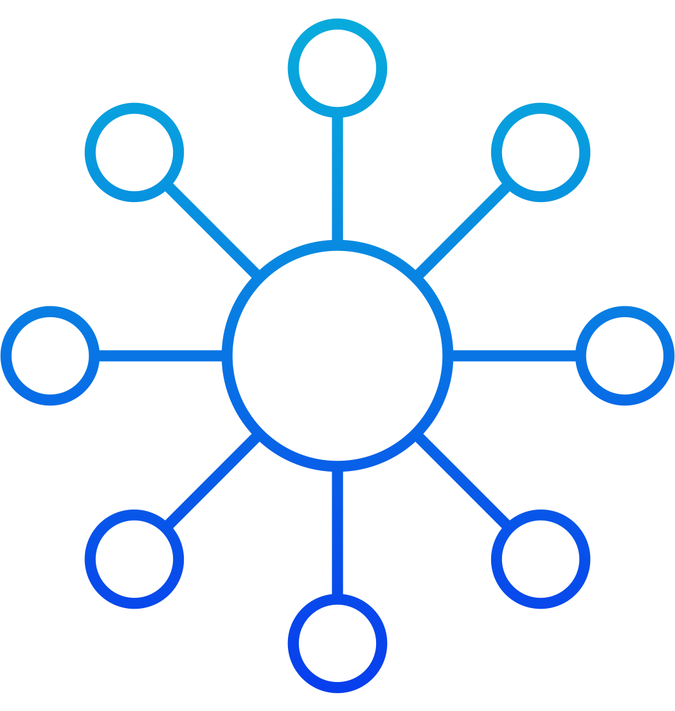

Introducing Dotfiles
A set of Mac OS X configuration files. Simply designed to fit your shell life.
Version: 0.2.116
Easy to get started.
All you have to do is drop Dotfiles into your $HOME, and everything will be setup automatically. There is a minimal amount of rules to learn.
Lightweight
Dotfiles comes packed with powerful features, including Bash Shell preferences, Homebrew essentials, macOS Preferences; all in just 115 KB
Simpler Structure
Each directory only contained a handful of files and rules.